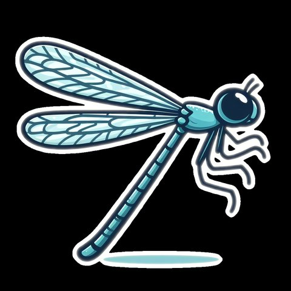

TODO: POST TITLE
TODO: body paragraph.
TODO: body paragraph.
Grown from: TODO: paper or link title

A note in the digital garden — short ideas tended with OpenClaw agents.TODO: body paragraph.
TODO: body paragraph.

A note in the digital garden — short ideas tended with OpenClaw agents.